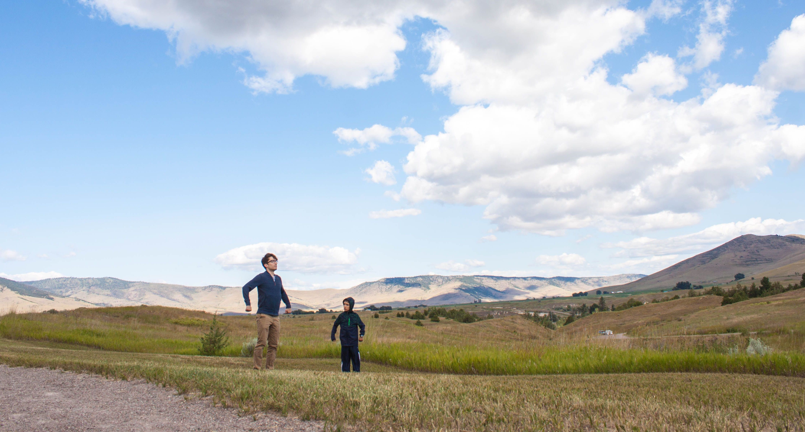

What Did I Do This Summer?
In which I try to explain that gap in my résumé.
August 25, 2019

Among other things, I went to Montana and my little brother and I pretended to be lynels.
I’ve been told that, when a potential employer sees a gap in a person’s résumé, they tend to want to know what was going on during that time. I was hoping that I would be able to say that I spent this summer writing fiction and blog posts, but anyone looking through this site (or my GitHub) may have noticed a large absence of activity in June and July. So what exactly was I spending my time on all summer?
Classes
Does anyone know how to decrease the difficulty in this game?
I took three classes online through Purdue this summer. Each class was a semester’s worth of content crammed into either eight weeks or four weeks, so the workload was fairly intense, even with only three of them – hence the lack of writing in June and July. Specifically, I took:
-
ENGL 420: Business Writing. A course all about writing in a business context, whether that’s resumes and cover letters or white papers and press releases. I won’t pretend I was ever very excited to work on this course, but I’m still glad I took it. I could tell I was due for some more practice writing things other than lab reports.
-
POL 327: Global Green Politics. This course was extremely interesting and pretty depressing. Each week had assigned readings covering two different topics in international environmental politics, from population growth to the ecological justice. There was also a fair amount of writing. Again, I think this sort of thing – reading and writing things outside of an engineering context – is something I really needed practice in. So I’m grateful for this course, even if it did make me pretty pessimistic about the fundamental unsustainability of capitalism.
-
PHIL 150: Logic. This course was just fun. It was basically just solving puzzles every day for four weeks. Like, we learned the formal rules behind the puzzles and why different solutions worked, but the homeworks felt like playing sudoku. It was an absolute blast.